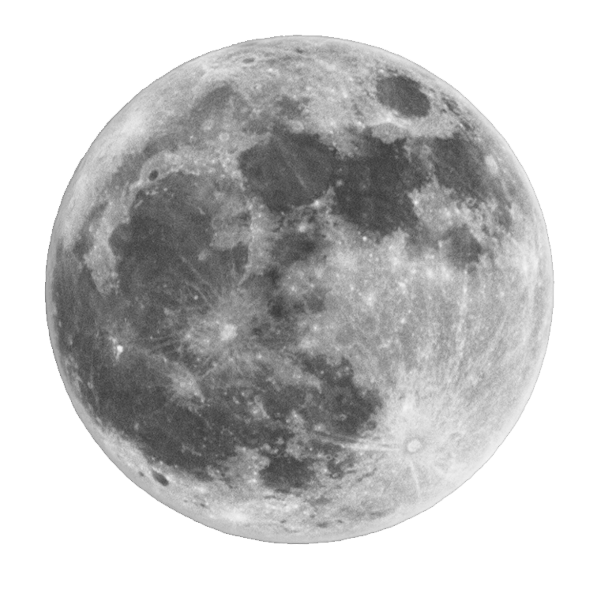

Sun
The Sun is the central star of our solar system, playing a vital role in supporting life on Earth. It is an immense, radiant sphere primarily composed of hydrogen and helium gas, undergoing nuclear fusion in its core. This fusion process converts hydrogen into helium, unleashing an immense amount of energy in the form of light and heat.
With a diameter of about 1.4 million kilometers (870,000 miles), the Sun is approximately 109 times larger than Earth and holds about 99.86% of the total mass in our solar system. Having existed for roughly 4.6 billion years, it is considered a middle-aged star. The Sun's astonishing energy production reaches an astounding 383 billion billion megawatts, providing sustenance for all life on Earth.
Sunlight, the energy emitted by the Sun, is essential for the process of photosynthesis, enabling plants to convert carbon dioxide and water into oxygen and energy-rich carbohydrates. Additionally, sunlight influences weather patterns, ocean currents, and the Earth's overall climate.
The Sun's outermost layer, known as the corona, becomes visible during solar eclipses, forming a plasma halo around the darkened disk of the Moon. The Sun also exhibits sunspots, temporary dark areas on its surface resulting from magnetic activity. Periodically, it releases solar flares and coronal mass ejections (CMEs), discharging energy and matter into space, which can impact space weather and sometimes affect Earth's magnetic field and communication systems.
Though the Sun will eventually evolve into a red giant and then a white dwarf, this transformation will not take place for billions of years. Until then, it remains the dominant celestial body in our solar system, providing us with light, warmth, and the energy crucial for sustaining life on our planet.
Mercury

Mercury, the smallest and closest planet to the Sun in our solar system, is a captivating celestial body with distinctive qualities. It follows a speedy orbit around the Sun at a distance of approximately 57.9 million kilometers and completes one revolution in just 88 Earth days, making it the fastest planet in our solar system. With a diameter of around 4,880 kilometers, Mercury is only slightly larger than our moon. Despite its relatively small size, the planet boasts a surprisingly massive iron-rich core, constituting approximately 42% of its total volume.
The surface of Mercury stands in stark contrast to other planets, presenting a rugged and barren appearance with numerous impact craters caused by asteroids and comets over billions of years. The absence of a substantial atmosphere leaves the planet vulnerable to space debris, resulting in the formation of these craters. Notable features include the vast Caloris Basin, one of the largest impact basins in the solar system, and extensive plains covered with smooth volcanic material, indicating past geological activity.
Mercury's close proximity to the Sun subjects it to extreme temperature fluctuations. Daytime temperatures soar to a scorching 430 degrees Celsius (800 degrees Fahrenheit), hot enough to melt lead, while nighttime temperatures plummet to a freezing -180 degrees Celsius (-290 degrees Fahrenheit) due to the absence of an atmosphere to retain heat.
Despite its harsh conditions, Mercury possesses a tenuous exosphere primarily composed of oxygen, sodium, and hydrogen, originating from surface materials, solar wind interactions, and micrometeoroid impacts. However, this exosphere is exceedingly thin and barely detectable from Earth.
Space missions such as NASA's MESSENGER have yielded valuable insights into Mercury's geology, magnetic field, and surface composition. Despite the challenges, scientists continue to study this enigmatic planet, hoping to unravel its origins and evolution, providing valuable clues about the early history of our solar system. As humanity ventures further into space exploration, Mercury remains an alluring target for scientific investigation, offering the potential to reveal profound secrets about the inner workings of our cosmic neighborhood.
Venus
Venus, the second planet from the Sun, is a captivating world that has intrigued scientists for decades. Often called Earth's "sister planet" due to its similar size and composition, Venus shares some characteristics with our planet but also exhibits striking differences. Its thick atmosphere is predominantly composed of carbon dioxide, creating a potent greenhouse effect that results in extreme heat, making it the hottest planet in our solar system. Surface temperatures can reach a blistering 900 degrees Fahrenheit (475 degrees Celsius). Venus has an incredibly slow rotation, with a single day on Venus taking longer than its year on Earth. This slow rotation and its unique "retrograde rotation," which sees the planet spinning clockwise on its axis, add to the planet's mysteries.
Despite its thick cloud cover, space missions and radar mapping have revealed a rocky, volcanic landscape on Venus. It features vast plains, highlands, towering mountains, and evidence of recent volcanic activity, including extensive lava flows. The planet's geological history is marked by both volcanic and impact-related processes. Additionally, Venus has intriguing atmospheric phenomena, such as fast winds and the beautiful "Venusian bow," a luminous arc caused by sunlight scattering through sulfuric acid droplets in the atmosphere. Scientists have also observed temporary bright spots, called "aphrodites," attributed to atmospheric waves.
Over the years, numerous flybys, orbiters, and landers have explored Venus, contributing to our understanding of this enigmatic planet. Despite its harsh surface conditions, studying Venus is essential in advancing our knowledge of planetary atmospheres and the consequences of greenhouse effects. As our missions continue, Venus remains a captivating subject that offers valuable insights into the diversity of celestial bodies within our solar system.
Earth

Earth, the third planet from the Sun, stands out as a unique celestial body supporting an extraordinary variety of life. With a diameter of around 12,742 kilometers, Earth's diverse ecosystems, climates, and geological formations captivate the imagination. Its life-sustaining atmosphere, primarily composed of nitrogen and oxygen, shields living organisms from harmful radiation. The planet's surface is mainly covered by vast oceans (about 71%), complemented by diverse landmasses, including majestic mountains, expansive plains, dense forests, and arid deserts.
The rhythmic rotation on its axis governs day and night, while its annual journey around the Sun spans approximately 365.25 days, defining a year. Earth's axial tilt engenders distinct seasons and weather patterns, influencing life on its surface. The magnetic field, generated by the liquid iron-nickel core, shields the planet from solar winds, preserving its atmosphere and supporting life.
Throughout history, Earth's geological transformations have shaped the course of human civilization, leaving behind awe-inspiring monuments and artifacts. The dynamic processes of plate tectonics and erosion continue to mold the landscape, leading to earthquakes, volcanic eruptions, and striking landforms. The planet is graced with natural wonders, from the sublime Grand Canyon to the enchanting Northern Lights.
However, the modern age brings formidable challenges. Anthropogenic climate change threatens the delicate ecological equilibrium, causing rising temperatures, extreme weather events, and ecological disruptions. Environmental degradation, pollution, deforestation, and resource depletion compound these concerns. As stewards of Earth, we bear the responsibility to safeguard its unique biodiversity and protect the environment for future generations. Embracing the beauty and fragility of our planet should inspire collective action towards sustainable coexistence with Earth's diverse life forms.
Moon
The moon, Earth's natural satellite, has captivated the human imagination and sparked scientific curiosity for countless generations. Positioned about 384,400 kilometers away from Earth, the moon plays a vital role in stabilizing our planet's rotation and governing the ocean tides. Its surface, marked with vast craters, maria, and rugged landscapes, bears the scars of eons of asteroid and comet impacts. The moon's origin is a subject of ongoing debate, but the prevailing theory suggests a colossal collision between Earth and a Mars-sized celestial body, leading to the formation of the moon from the ejected debris.
The moon's impact on Earth is diverse and significant. Its gravitational pull generates the rhythmic tides in the oceans, affecting marine life and coastal ecosystems. Moreover, the moon's gravitational interaction helps maintain Earth's axial tilt, which contributes to a relatively stable climate and supports the conditions necessary for life to thrive. Despite its lack of atmosphere and magnetic field, the moon exhibits evidence of past and possibly even recent volcanic activity, as seen in its vast plains of solidified lava known as "seas" or maria.
During the Apollo missions of the 1960s and 1970s, the moon reached the pinnacle of human fascination. Astronauts' historical journeys to its surface provided invaluable scientific data and iconic images that have become symbols of human accomplishment. These missions unveiled the moon's regolith, composed of fine dust and rocks, and indicated the potential presence of valuable resources such as helium-3 and water ice, igniting dreams of future lunar exploration and colonization.
Throughout history, the moon has served as both a celestial timekeeper and a cultural emblem across diverse civilizations, inspiring art, folklore, and religious beliefs. Today, robotic missions continue to explore the moon's various facets and mysteries, advancing our knowledge of its geological history and potential to support future human endeavors in space.
Mars

Mars, also known as the "Red Planet," is the fourth planet from the Sun in our solar system. Its distinct reddish hue earned it the name after the Roman god of war. Compared to Earth, Mars is smaller, with a diameter of approximately 6,779 kilometers. Its atmosphere is thin and mainly composed of carbon dioxide, rendering it unable to support human life. Surface conditions on Mars are harsh, experiencing extreme temperatures ranging from as low as -80 degrees Celsius (-112 degrees Fahrenheit) in winter to milder temperatures during the daytime. The planet's landscape is diverse, showcasing vast plains, towering volcanoes, deep valleys, and the immense Olympus Mons, the largest volcano in the solar system. Evidence from space missions has pointed to the presence of ancient water flows on Mars, fueling speculation about the possibility of past Martian life.
Mars boasts two polar ice caps composed of water and carbon dioxide ice, which undergo seasonal changes with temperature fluctuations. Scientists are intrigued by the potential for liquid water beneath the surface, as it could provide a suitable environment for microbial life. Mars experiences periodic global dust storms, obscuring its surface from view during these events.
Throughout history, numerous space missions have been dedicated to exploring Mars, providing valuable insights into its geology, atmosphere, and potential for past habitability. Recent years have seen ambitious plans for manned missions to Mars, aiming to further study the planet, potentially establish human colonies, and pave the way for future interplanetary travel.
The allure of Mars lies in its significance for understanding planetary formation, the evolution of our solar system, and the possibility of life beyond Earth. As technology and research progress, our knowledge of Mars is set to expand, unveiling new and captivating discoveries about this neighboring world.
Jupiter

Jupiter, the largest planet in our solar system, is a mesmerizing gas giant positioned fifth from the Sun. With a diameter of around 86,881 miles (139,822 kilometers), it easily dwarfs all other planets, holding enough volume to engulf over 1,300 Earths. Made up predominantly of hydrogen and helium, Jupiter lacks a solid surface and is characterized by its striking cloud bands and zones formed from dense clouds. Among its remarkable features are the dynamic cloud patterns, frequently punctuated by violent storms, with the Great Red Spot being a prominent and long-lasting example.
Jupiter's immense mass makes it the reigning monarch of the solar system. Its strong gravitational pull profoundly impacts nearby celestial bodies and has played a crucial role in shaping the solar system's architecture. The planet's vast magnetosphere, a powerful magnetic field, extends far beyond its physical boundaries, safeguarding it from harmful solar radiation while capturing an array of charged particles that lead to captivating auroras at its poles.
Additionally, Jupiter boasts an impressive array of moons, numbering at least 79 confirmed satellites, including the famous Galilean moons - Io, Europa, Ganymede, and Callisto. Each of these moons exhibits unique characteristics, with Europa, in particular, believed to possess an ocean beneath its surface, igniting hope for potential extraterrestrial life.
Studying Jupiter yields invaluable insights into the early history of our solar system, shedding light on planetary migration and the dynamics of gas giants. Through rigorous exploration of Jupiter's atmosphere, magnetic field, and interior, researchers and space missions like NASA's Juno probe strive to unravel the mysteries of its formation and the forces driving its massive storms.
As one of the five planets visible from Earth and a true planetary giant, Jupiter continues to captivate human curiosity, prompting ongoing scientific investigations. Its profound influence on the solar system and its extraordinary attributes make it a focal point in humanity's quest to comprehend the vast cosmic wonders within our reach and beyond.
Saturn

Saturn, the sixth planet from the Sun in our solar system, is a captivating gas giant that has intrigued astronomers and observers for centuries. Known for its stunning and iconic ring system encircling the planet, Saturn's allure lies in its majestic appearance. With a diameter of about 116,464 kilometers, it ranks as the second largest planet in our solar system, trailing only behind Jupiter. Interestingly, despite its immense size, Saturn's density is less than that of water, making it a planet that would float if placed in a large enough bathtub.
The planet's atmosphere is primarily composed of hydrogen, along with traces of helium and other elements, showcasing beautiful cloud bands and atmospheric features. An intriguing hexagonal-shaped jet stream near its north pole adds to its allure. Saturn boasts an extensive family of more than 80 natural satellites, with Titan, its largest moon, standing out due to its substantial atmosphere resembling an early Earth, complete with clouds and a hydrocarbon-driven climate cycle.
One of Saturn's most mesmerizing features is its stunning ring system. Made up of countless small ice particles ranging from tiny grains to larger boulders, the rings span thousands of kilometers in diameter but have a relatively narrow thickness of only a few tens of meters. While the exact origin of Saturn's rings remains a scientific puzzle, they are believed to be remnants of a shattered moon or a moon prevented from forming due to Saturn's powerful gravitational forces.
Saturn's axial tilt leads to seasonal changes similar to those experienced on Earth, with the planet taking around 29.5 Earth years to complete one orbit around the Sun. Its distant location has posed challenges in observing its movements and changes in detail throughout history.
Saturn's enigmatic nature and significance in understanding planetary systems continue to captivate researchers and space exploration missions. As advanced telescopes and spacecraft provide us with new insights, there are still many mysteries surrounding this ringed giant, promising exciting discoveries and further exploration in the future.
Uranus

Uranus, the seventh planet from the Sun in our solar system, is an intriguing gas giant that fascinates both astronomers and space enthusiasts. It derives its name from the Greek god of the sky and possesses a remarkable characteristic - an almost 98-degree tilt of its axis, causing it to roll along its orbital path instead of spinning upright like most planets. This unusual tilt results in extreme seasonal variations, with each pole experiencing 42 years of continuous sunlight followed by 42 years of darkness.
The planet's surface is predominantly covered by thick clouds of methane and other gases, giving it a distinctive pale blue-green appearance when viewed from a distance. Unlike terrestrial planets, Uranus lacks a solid surface, featuring an atmosphere that gradually transitions into an icy and slushy mantle of water, ammonia, and methane. Its gaseous composition is primarily hydrogen and helium, with traces of other elements and compounds.
Uranus is renowned for its faint but intricate system of rings, which sets it apart from other gas giants like Saturn. Moreover, it hosts a diverse collection of 27 known moons, each exhibiting unique characteristics. Among these moons, Miranda stands out with its fractured and chaotic landscape, hinting at a turbulent history.
Despite several spacecraft, including Voyager 2, conducting flybys of Uranus, our understanding of this remote ice giant remains somewhat limited. In-depth exploration and further research missions are crucial to unraveling the mysteries surrounding Uranus, including its formation, atmospheric dynamics, and the peculiar axial tilt. Such investigations promise to provide valuable insights into the broader mechanisms governing our universe.
Neptune

Neptune, the eighth planet from the Sun in our solar system and the farthest known, possesses a captivating and enigmatic nature. As a colossal gas giant, it draws its name from the Roman god of the sea and is distinguished by its vibrant azure hue, which results from methane in its atmosphere reflecting blue light. With a diameter of approximately 49,244 kilometers, Neptune ranks as the fourth-largest planet in our solar system. Its formidable mass, about 17 times that of Earth, wields a powerful gravitational force that significantly influences its surroundings.
Characterized by ferocious winds, Neptune's atmosphere experiences gusts of up to 2,100 kilometers per hour, marking the fastest winds in our solar system. These intense winds are generated by the planet's rapid rotation and internal heat, completing a full revolution in just 16 hours. Composed mainly of hydrogen and helium, Neptune's atmosphere also contains trace amounts of methane and other hydrocarbons. The methane content contributes to the absorption of red light, giving the planet its striking blue appearance.
Neptune's most remarkable feature is the Great Dark Spot, akin to Jupiter's Great Red Spot but less stable and more transient. This colossal storm, comparable in size to Earth, intermittently vanishes and reappears, revealing the ever-changing and dynamic nature of Neptune's atmosphere. The planet also showcases various other atmospheric phenomena, including bright and dark bands, clouds, and storms, captivating astronomers and planetary scientists alike.
Home to 14 confirmed natural satellites, Neptune's diverse array of moons includes Triton, the most notable among them. This icy moon orbits Neptune in a retrograde direction, suggesting that it was likely captured by Neptune's gravity and not formed with the planet. Triton's intriguing features, such as erupting nitrogen gas geysers and dark streaks, add to the allure of Neptune's moons and provide valuable insights into the planet's early history and formation.
Located at an average distance of approximately 4.5 billion kilometers from the Sun, Neptune remains a mysterious and enticing celestial body. Due to its vast distance, exploring Neptune in detail poses significant challenges for space missions. Nonetheless, astronomers persevere in their study of this distant ice giant, seeking to unravel its mysteries and enhance our understanding of the formation and evolution of our solar system and the vast universe beyond.
Pluto

Pluto, formerly regarded as the ninth planet in our solar system, is a small and enigmatic celestial body found in the outer reaches of the Kuiper Belt. Measuring around 2,377 kilometers in diameter, Pluto is noticeably smaller compared to both the inner planets and some of the larger moons in our solar system. Initially discovered in 1930 by astronomer Clyde Tombaugh, Pluto's status as a planet was reassessed in 2006 by the International Astronomical Union (IAU) due to its distinct characteristics. Consequently, it was reclassified as a "dwarf planet," and it shares its orbital region with other icy objects beyond Neptune.
Among these neighboring objects, Charon, its largest moon, stands out, being approximately half the size of Pluto itself. Pluto's surface is captivating and varied, displaying vast icy plains, mountainous areas, and frozen nitrogen, methane, and carbon monoxide ices. Adding to the intrigue, there exists a thin atmosphere primarily composed of nitrogen with traces of methane and carbon monoxide.
Pluto's highly elliptical orbit results in significant variations in its distance from the Sun, leading to substantial temperature fluctuations on its surface. While the New Horizons spacecraft gathered valuable data during its flyby in 2015, there remains much to uncover about Pluto. Its exploration has sparked fascinating inquiries into the origins and development of icy bodies within the Kuiper Belt, fueling our curiosity about the most distant reaches of our solar system.